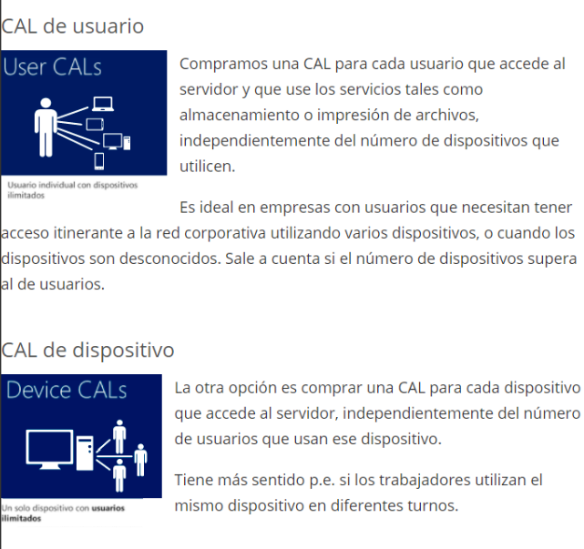

CALS - Llicències d’Accés de Client
Què és una CAL?
Una CAL (Client Access License) és una llicència necessària perquè un usuari o dispositiu pugui connectar-se legalment a un servidor amb Windows Server.
⚠️ La llicència del sistema operatiu Windows Server només cobreix el servidor en si, no el dret d'accés dels usuaris o dispositius.
Tipus de llicències
Llicència de servidor
Autoritza la instal·lació i ús del sistema operatiu Windows Server en un servidor físic o virtual.
Llicència del sistema operatiu del dispositiu client
Cada dispositiu client (ex: un PC amb Windows 10) necessita la seva pròpia llicència del SO per funcionar legalment.
CAL d’accés al servidor
Hi ha dues modalitats principals:
CAL per usuari (User CALs)
Una CAL per cada usuari que accedeix al servidor, independentment del nombre de dispositius que utilitzi.
✅ Recomanada en entorns on els usuaris fan servir diversos dispositius (ordinador, portàtil, mòbil) o quan els dispositius són desconeguts.
üí° Ideal quan hi ha m√©s dispositius que usuaris.
CAL per dispositiu (Device CALs)
Una CAL per cada dispositiu que accedeix al servidor, independentment de quants usuaris l’utilitzin.
✅ Recomanada en entorns amb torns, on diversos treballadors comparteixen un mateix ordinador.
üí° Ideal quan hi ha m√©s usuaris que dispositius.

Versions de Windows per a dispositius clients
A l’hora de connectar dispositius clients a un servidor amb Windows Server, és important conèixer les diferències entre les edicions de Windows (Home, Pro, Enterprise...).
Windows 10/11 Home
- Pensat per a ús domèstic.
- No es pot unir a un domini (Active Directory).
- No permet connexions RDP entrants (no es pot controlar remotament via Escriptori remot).
- No és recomanat per a entorns empresarials ni per connectar a servidors.
Windows 10/11 Pro
- Pensat per a usuaris professionals i empreses petites.
- Sí pot unir-se a un domini (Active Directory).
- Permet connexions RDP entrants (es pot controlar remotament).
- Compatible amb polítiques de grup i eines de gestió empresarial.
Windows 10/11 Enterprise
- Pensat per a grans empreses.
- Totes les funcionalitats de la versió Pro, i més:
- Més opcions de seguretat (BitLocker, AppLocker…).
- Suport per a VDI (infraestructura d’escriptori virtual).
- Funcions avançades de gestió i desplegament massiu.
Windows Education
- Similar a Enterprise però pensat per a entorns educatius.
- Inclou funcions avançades amb llicències adaptades a escoles i institucions.
❗ Compatibilitat i recomanacions
- Per a entorns professionals on s’utilitzen servidors, es recomana com a mínim Windows Pro als dispositius clients.
- Windows Home no pot utilitzar-se per a escenaris corporatius que requereixin unió a dominis, RDP o gestió centralitzada.
- En molts casos, si es té un dispositiu amb Windows Home, es pot fer una actualització de llicència a Windows Pro des del Microsoft Store.
üí° Nota: Encara que un dispositiu tingui Windows Pro, per accedir legalment al servidor segueix fent falta una CAL per usuari o dispositiu.
Llicències RDS (Remote Desktop Services)
Les CAL RDS són necessàries quan els usuaris es connecten remotament al servidor mitjançant Escriptori remot, per accedir a aplicacions o recursos allotjats al servidor.
Per a connexions remotes cal: - Una CAL per usuari o dispositiu - + una CAL RDS per usuari/dispositiu que accedeixi via RDP
Com adquirir CALs?
Es poden comprar directament a la web de Microsoft, habitualment en paquets.
üîó Comprar CALs per Windows Server 2019
Servidor de llicències Terminal Server
El servidor de llicències RDS emet CALs quan els usuaris o dispositius accedeixen al Remote Desktop Session Host (RDSH).
Instal·lació del rol de llicències RDS
- Inicia sessió com a Administrador.
- Obre el Administrador del servidor.
- Ves a Afegir funcions > Serveis d’escriptori remot.
- Selecciona Administració de llicències d’escriptori remot.
- Configura l’àmbit com "Aquest domini".
- Clica Instal·lar.
Activació del servidor de llicències
- Obre el Administrador de llicències RDS.
- Clic dret sobre el servidor > Activar servidor.
- Segueix l’assistent:
- Connexió automàtica (recomanada)
- Introdueix la informació de l’empresa
- No seleccionis "Iniciar l'assistent per instal·lar llicències ara"
- Finalitza l’activació.
✅ Un cop activat, ja podràs instal·lar i gestionar les CALs.